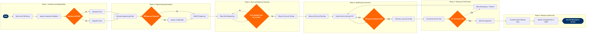

| Step | L4 Step Name | KPI / Target | Pain Point / Risk | Gate |
|---|---|---|---|---|
| 1.1 | Receive and log AD/SB notice into tracking system | AD applicability assessment completed within 3 business days of issuance; 100% of ADs logged | AD applicability across mixed fleet configurations (different mod states, AFMS revisions) requires manual cross-check in CAMP — no automated fleet-wide applicability filter exists, creating missed-applicability risk on large fleets | |
| 1.2 | Assess compliance deadline and work priority flag | 100% of mandatory ADs scheduled before compliance deadline; 0% AD overrun rate | Short-fuse Emergency ADs (EADs) compress planning windows to less than 48 hours, forcing AOG-level priority and displacing planned line maintenance events across multiple stations | |
| 1.3 | Determine mandatory vs. optional modification track | Mandatory ADs never exceed compliance deadline — 0% regulatory non-compliance rate | Optional SBs reclassified as mandatory mid-stream (e.g., OEM safety recommendation upgrade) force reprioritization and resource reallocation from already-scheduled maintenance events | ⚠ |
| 2.1 | Develop Engineering Order from OEM technical data | EO development cycle 5 business days for standard modifications; 2 days for emergency ADs | Boeing TechConnect access latency and AMM revision currency issues cause engineers to reference outdated task data — no automated revision alert in AMOS when OEM documentation is superseded post-EO creation | |
| 2.2 | Classify modification as major or minor alteration | Major/minor determination documented within 1 business day of EO draft completion; 0% misclassification findings on FAA audits | Major vs. minor alteration boundary under FAR Part 43 Appendix A is subjective for novel avionics integrations — misclassification exposes the airline to FAA enforcement action and certificate action during oversight audits | ⚠ |
| 2.3 | Submit Engineering Order to CAMO for formal approval | CAMO EO approval turnaround 2 business days for standard modifications; same-day for EADs | AMOS approval workflow does not enforce mandatory attachment validation (SB copy, applicability data), allowing incomplete EOs to route to the shop floor and cause mid-task holds for missing documentation | |
| 3.1 | Raise parts requisition for avionics LRUs and consumables | Parts availability confirmed 72 hours before scheduled modification slot; on-time parts availability rate 95% | Avionics LRU lead times from OEM-approved suppliers (Honeywell, Collins Aerospace) can reach 60–90 days — long-range parts planning is rarely executed because modification scheduling is reactive, creating AOG parts shortages | |
| 3.2 | Verify parts serviceability, traceability, and shelf-life | Parts shortage-driven deferral rate 5% of avionics work orders; counterfeit parts detection — 0 unapproved parts reaching aircraft | AMOS parts provenance tracking does not automate FAA AC 21-29D traceability chain verification for avionics LRUs — manual document review required, and counterfeit avionics parts remain an active industry risk (FAA SUP-04 flag) | ⚠ |
| 3.3 | Reserve hangar bay, tooling, and technician staffing | Avionics modification slot utilization 85%; aircraft out-of-service time within 10% of planned duration | Avionics modifications requiring simultaneous avionics and airframe access create hangar bay scheduling conflicts, particularly when consolidated with heavy check inputs — bay and lift equipment contention causes schedule slippage | |
| 4.1 | Remove existing avionics LRU and prepare installation zone | LRU removal and serviceable tagging completed per AMM procedure; 0 FOD events per modification event | Trax task card completion tracking is not real-time on the hangar floor — supervisors rely on end-of-shift paper sign-offs that delay discrepancy identification and extend aircraft ground time | |
| 4.2 | Install avionics modification per EO and AMM procedure | Installation rework rate 2% of avionics work orders; first-time quality rate 98% | Wire harness modifications on older aircraft encounter undocumented prior non-standard SB wiring deviations not reflected in current AMM diagrams — creates FOD risk and requires unplanned engineering investigation, extending aircraft down time | |
| 4.3 | Inspect wiring integrity, bonding, and HIRF protection | Wiring inspection pass rate 96% first pass; rework cycle 4 hours; 0 HIRF non-conformances at release | HIRF and lightning protection bonding measurements require specialized test equipment not always available at line stations — deferred compliance testing creates a safety gap and requires ferry flight restrictions until verified | ⚠ |
| 5.1 | Load approved avionics software and update configuration data | Software load completion without error within 2 hours; LSAP compatibility verified against aircraft CDS 100% | LSAP version mismatches between aircraft Configuration Deviation Sheet (CDS) maintained in CAMP and the physical installed state cause rejected loads — manual CDS reconciliation is error-prone during high-tempo fleet-wide software campaigns | |
| 5.2 | Execute functional ground test per approved test procedure | Avionics ground test pass rate 94% first run; 0 open safety-of-flight defects at release | BITE test coverage on older avionics line-replaceable units may not fully exercise the modification scope — supplemental manual test procedures are required but not always linked in AMOS task cards, creating coverage gaps discovered only during flight test | |
| 5.3 | Evaluate test results against acceptance criteria | Discrepancy rate at final test 4%; 0 open safety-of-flight items at time of release | Test acceptance criteria for modified systems sometimes reference superseded test procedures — AMOS and Trax do not flag document revision status at time of test sign-off, allowing outdated acceptance limits to be applied to new configurations | ⚠ |
| 6.1 | Complete maintenance release and regulatory documentation | Maintenance release documentation completeness 100% before aircraft release; FAA Form 337 filed within 30 days of major alteration completion | FAA Form 337 filing for major alterations is a paper-plus-digital hybrid process in FAA FSIMS with no automated submission confirmation — missed or late filings are only discovered during FAA Principal Inspector audits, exposing the operator to civil penalty | |
| 6.2 | Update aircraft configuration records and return to service | Configuration record update completed within 24 hours of maintenance release; CAMP mod state accuracy 99.5% | CAMP Systems configuration record updates for multi-LRU modifications require manual entry of each modified item — bulk update capability is absent, creating data entry backlog during fleet-wide AD compliance campaigns and increasing the risk of mod state discrepancies between CAMP and physical aircraft |